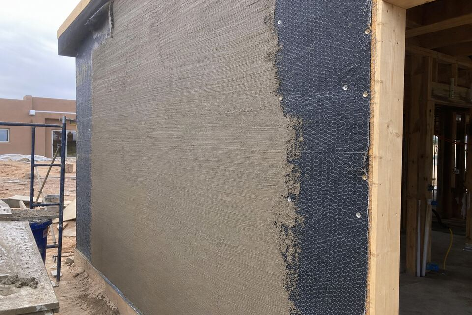

New Stucco Installation in Santa Fe
Additions, casitas, garages, new builds, and walls coming over from siding — new stucco is where the next thirty years get decided in three coats. Everything this site says about repairs traces back to corners cut at this stage, which is why the installation conversation is mostly about what you cannot see.

The three-coat system, honestly explained
Real cement stucco is a system: weather-resistive paper that manages water, lath that gives the cement its grip, a scratch coat keyed into the lath, a brown coat floated flat and true — the layer that decides whether walls look straight forever — and the finish coat carrying texture and color. Each coat cures before the next. Compressed schedules and skipped cure times are where five-year-old walls get their mystery cracks, which is why the schedule question belongs in every bid comparison.
Water management is the real product
Stucco sheds most water and admits a little; the paper and flashing behind it decide whether that little matters. Window and door flashing, weep screeds at the wall base, parapet caps and canale tie-ins on flat roofs — these details are the whole difference between a dry wall and a slow claim. On flat-roofed Santa Fe construction, the parapet detailing deserves its own line in any bid you compare.
One-coat and synthetic systems
Modern one-coat systems and acrylic finish options exist for good reasons — schedule, insulation, design — and they are legitimate when specified honestly. What they are not is interchangeable with three-coat cement; each carries its own repair story and aging curve, walked through on the decision guide. The right system follows the building, the budget, and how long you intend to own the walls.
Matching the rest of the house
Additions carry a special test: the new wall meets the old one in daylight. Matching texture and color across that joint — and detailing the transition so it does not crack on schedule — is craft work worth asking every bidder how they plan to do. “It will blend eventually” is not a plan.
Addition, casita, or new build coming?
Send the form with the project shape and your area. The scope visit covers system choice, water details, and the match to existing walls — itemized before work.
Questions people ask
How long does new stucco take?
The honest answer includes cure time: application runs days, but each coat cures before the next, so a proper three-coat job spans weeks of calendar even when crew-days are few. Bids promising it all in a long weekend are telling you which step they skip.
Can stucco go over my existing siding?
Often, with proper substrate prep, paper, and lath — the wall behind decides. The scope visit answers it for your specific construction rather than by slogan.
What questions separate stucco bids?
Three travel well: what is the coat schedule including cure times; how are windows, weeps, and parapets flashed; and how will texture and color be matched to existing walls. Bids that answer in writing tend to be the bids that build that way.